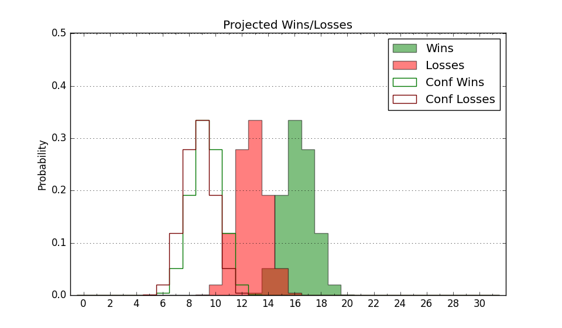

| Home | Game Probabilities | Conferences | Preseason Predictions | Odds Charts | NCAA Tournament |
| City: | Stockton, California | |
| Conference: | West Coast (4th)
| |
| Record: | 6-5 (Conf) 13-9 (Overall) | |
| Ratings: | Comp.: 7.5 (103rd) Net: 7.9 (101st) Off: 113.0 (109th) Def: 105.1 (104th) SoR: 0.0 (106th) |
| Remaining | ||||||
|---|---|---|---|---|---|---|
| Date | Opponent | Win Prob | Pred. | |||
| 2/4 | Santa Clara (46) | 37.9% | L 74-77 | |||
| 2/7 | @ Pepperdine (264) | 74.2% | W 72-65 | |||
| 2/11 | Loyola Marymount (187) | 82.5% | W 74-64 | |||
| 2/14 | Saint Mary's (31) | 27.6% | L 66-73 | |||
| 2/18 | @ Washington St. (121) | 40.1% | L 73-75 | |||
| 2/21 | @ Gonzaga (7) | 3.4% | L 61-85 | |||
| 2/28 | San Francisco (93) | 60.5% | W 72-69 | |||
| Previous | Game Score | |||||
| Date | Opponent | Win Prob | Result | Off | Def | Net |
| 11/8 | @Nevada (60) | 21.9% | L 77-78 | 8.4 | 2.2 | 10.6 |
| 11/12 | Long Beach St. (237) | 88.9% | W 69-66 | -22.5 | 4.4 | -18.1 |
| 11/15 | @Cal St. Fullerton (183) | 57.3% | W 85-73 | -0.2 | 16.5 | 16.3 |
| 11/20 | @Florida Atlantic (113) | 38.2% | L 59-82 | -14.7 | -14.0 | -28.7 |
| 11/24 | (N) Stony Brook (224) | 79.2% | W 86-58 | 18.2 | 14.5 | 32.8 |
| 11/25 | (N) Jacksonville (300) | 89.1% | W 68-53 | -3.0 | 9.7 | 6.7 |
| 11/29 | Sacramento St. (233) | 88.3% | W 68-54 | -24.9 | 25.9 | 1.0 |
| 12/3 | @Air Force (337) | 88.0% | W 80-65 | 22.0 | -12.5 | 9.5 |
| 12/6 | @California (54) | 19.7% | L 61-67 | 0.8 | 3.0 | 3.8 |
| 12/16 | @BYU (16) | 5.3% | L 57-93 | -18.7 | -6.5 | -25.2 |
| 12/21 | Nicholls St. (225) | 87.6% | W 95-82 | 14.8 | -19.3 | -4.5 |
| 12/28 | @San Diego (202) | 61.1% | L 54-66 | -27.2 | 1.1 | -26.1 |
| 12/30 | @Loyola Marymount (187) | 58.1% | L 71-80 | -2.1 | -13.2 | -15.3 |
| 1/2 | Oregon St. (208) | 85.0% | W 84-53 | 20.9 | 15.8 | 36.8 |
| 1/4 | Pepperdine (264) | 90.7% | W 74-69 | -4.1 | -10.0 | -14.1 |
| 1/8 | @Portland (220) | 65.6% | L 89-90 | 15.9 | -16.3 | -0.3 |
| 1/10 | San Diego (202) | 84.2% | W 77-70 | -4.7 | 0.3 | -4.4 |
| 1/14 | @Santa Clara (46) | 15.2% | L 69-85 | 5.8 | -8.2 | -2.4 |
| 1/17 | @Oregon St. (208) | 62.5% | W 81-64 | 19.9 | 1.3 | 21.2 |
| 1/24 | Seattle (122) | 69.6% | W 56-54 | -13.7 | 8.9 | -4.8 |
| 1/28 | Portland (220) | 86.7% | W 74-51 | -0.5 | 15.8 | 15.4 |
| 1/31 | @San Francisco (93) | 31.0% | L 82-87 | 17.2 | -15.0 | 2.2 |
| Stats & Trends | |||||
|---|---|---|---|---|---|
| Current | Day | Week | Month | Season | |
| Composite | 7.5 | +0.0 | +1.1 | +1.9 | +14.6 |
| Comp Rank | 103 | +1 | +8 | +14 | +112 |
| Net Efficiency | 7.9 | +0.0 | +0.9 | -0.1 | -- |
| Net Rank | 101 | -- | +8 | +8 | -- |
| Off Efficiency | 113.0 | +0.0 | +1.0 | +2.5 | -- |
| Off Rank | 109 | +1 | +11 | +32 | -- |
| Def Efficiency | 105.1 | +0.0 | -0.1 | -2.6 | -- |
| Def Rank | 104 | -1 | +7 | -19 | -- |
| SoS Rank | 155 | -- | +14 | +13 | -- |
| Exp. Wins | 16.3 | +0.0 | -0.0 | +0.2 | +5.3 |
| Exp. Conf Wins | 9.3 | +0.0 | -0.0 | +0.2 | +3.1 |
| Conf Champ Prob | 0.0 | -- | -- | -0.0 | -0.1 |

| Advanced Stats | ||
|---|---|---|
| Stat | Value | Rank |
| Off Eff FG % | 0.540 | 97 |
| Off Ast Ratio | 0.159 | 102 |
| Off ORB% | 0.362 | 42 |
| Off TO Rate | 0.171 | 325 |
| Off FT Ratio | 0.327 | 252 |
| Def Eff FG % | 0.490 | 101 |
| Def Ast Ratio | 0.130 | 60 |
| Def ORB% | 0.248 | 22 |
| Def TO Rate | 0.136 | 252 |
| Def FT Ratio | 0.392 | 272 |